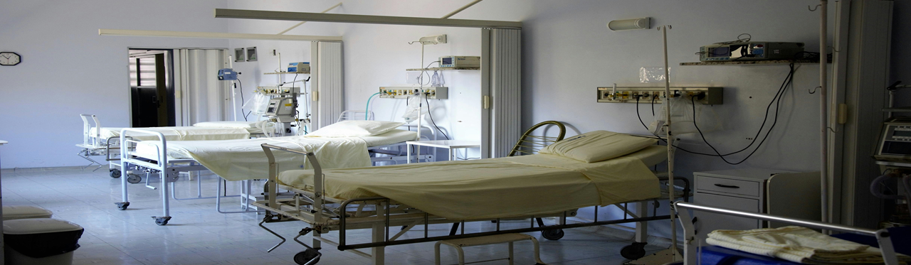
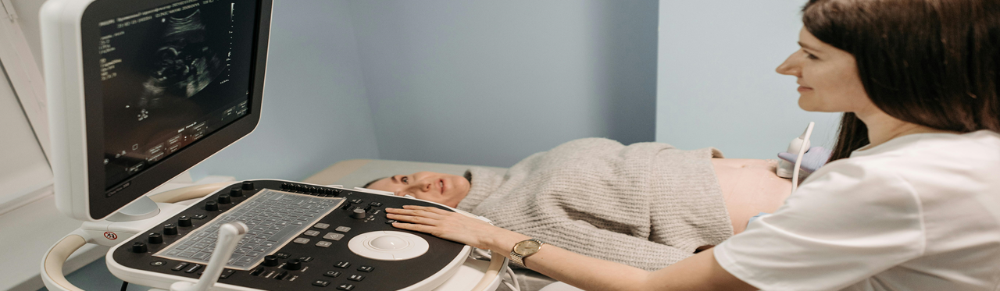
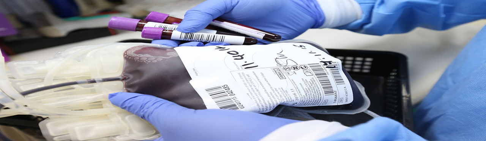
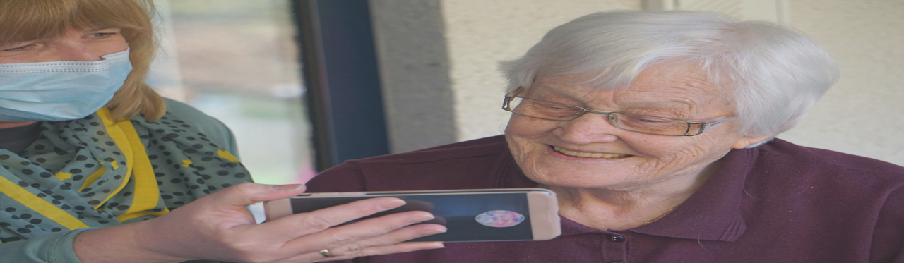

Here you can find details of a range of HSMA projects that are currently being worked on.
Click on the preview for each project to read the full details. For many completed projects, you can watch a short talk from the HSMAs who undertook the project on their plans, successes and challenges.
Projects In Progress
Geographic and Boosted Tree Modelling of Healthcare worker vaccination uptake
There is a decreasing uptake of COVID and flu vaccinations among healthcare workers. Identifying patterns by staff uptake, gender, ethnicity, deprivation, and other factors can help. Using geographic and boosted tree modelling, along with regression analysis, can capture these patterns and provide useful data for stakeholders to address the issue.
DESmond: Discrete Event Simulation and Artificially Intelligent Forecasting: Modelling a Prostate Cancer Pathway
This project aims to develop a Discrete Event Simulation model to predict demand and identify potential bottlenecks using live data. This model could help reallocate resources proactively, helping to ensure people have the fastest possible treatment.
Improving ambulance care via fast feedback from Quality Care Indicators
The project aims to improve ACQI data quality and provide rapid feedback using a tool to analyse free text fields, capture sentiment, categorize incidents, and assess treatment appropriateness. This tool could be shared with other Ambulance Trusts and serve as a backup for to manually review data. It will also predict rule changes and their impact on scores.
Modelling eye injection pathways
The project aims to develop a flexible simulation model to optimise anti-VEGF treatment strategies in ophthalmology. It will use dual modelling frameworks, a modular design, and an interactive dashboard. The model will analyse clinical effectiveness, costs, and resource requirements, adapting to new treatments. The objective is to provide a tool to improve patient outcomes and optimize resource use and costs.
Modelling GP Phone calls
The project uses Discrete Event Simulation to model how patients navigate between GP and 111 services, and to assess the knock-on effect that this has on Emergency Departments. The aim is to support better routing of patients to primary care.
Using machine learning models to predict future frailty
The project uses machine learning to estimate future frailty in the Wakefield District and identify key predictive features. It aims to plan resource allocation based on evidence, using two years of linked data. The project will also explore predicting other long-term conditions and produce reports and a user interface for stakeholders.
Understanding drivers of increased length of stay
NCL has seen a rise in long Length of Stay (LoS) over the past 5 years, causing system strain. This project aims to develop a causal model to identify factors affecting LoS and estimate the impact of interventions. Key aims include building qualitative and quantitative models of LoS and modelling changes in response to interventions.

Using classification modelling technques to investigate changes in Healthcare Resources Group (HRG) coding over time
The project will use classification modelling and explainable AI to identify changes in complexity and comorbidity categorisation over time, ensuring accurate cost pressure insights.

Modelling bed occupancy on an Acute Ward
The project aims to develop a tool for time series forecasting of bed occupancy using historical data, incorporating seasonality and growth. A web-based app will simulate acute bed models, including variables like closed beds and additional capacity. Using machine learning and discrete event simulation, the tool will aid decision-making and provide reliable daily forecasts.
Forecasting the supply of medical doctors
The project aims to forecast the regional demand for medical doctors, considering factors like trainees and population. It will plot a graph showing the current supply versus demand. Additionally, it will simulate outcomes under different scenarios, such as changes in trainee numbers or population health, to better understand and address the gap.
Optimising the location of Breast Cancer diagnostic services across Devon
Over 6000 patients are referred annually for fast-track breast symptom diagnosis at RD&E and NDDH. Increasing referrals and limited infrastructure necessitate building or extending diagnostic units. The project aims to determine optimal locations for additional services to minimize patient travel time and reduce costs, using data science to map demand and calculate travel distances and benefits.

Referral to treatment waiting times for Neurosurgical patients
The project models the neurosurgical patient pathway to predict waiting list changes and treatment wait times. It aims to add user interaction to explore how capacity adjustments affect waiting times and track patients waiting over 52 weeks each month.
Predicting the risk of injurious falls in older people with atrial fibrillation
Atrial fibrillation (AF) increases stroke risk, and anticoagulation reduces this risk but can cause bleeding. Despite guidelines, many clinicians avoid prescribing anticoagulants to those at risk of falls. This project explores using machine learning to predict injurious falls in older AF patients and aims to develop a tool to personalize anticoagulant treatment based on falls risk.
Clinical coding automation using Natural Language Processing
The project aims to use Natural Language Processing (NLP) to automate the prediction of ICD-10 or OPCS-4 codes from doctor/patient notes, currently done manually. Initially focusing on 3-character ICD-10 chapters, it will eventually predict full 4-character codes. Collaborating with a provider, the project will streamline coding and improve accuracy.
Modelling 111 option 2 call centre
The project aims to improve two struggling 111 call centres for mental health patients in Norfolk and Suffolk. It will develop a DES model to compare staffing approaches and determine the resources needed for safe service. Additionally, a tool will be created to ensure safe rosters by inputting current rosters and forecasting call levels.
Predicting the future demand for Renal replacement therapy
Kidney disease is projected to be the fifth leading cause of premature deaths globally by 2040. Rising demand for dialysis and transplants exceeds capacity in England. The project aims to develop a model using forecasting techniques to predict future demand and address it by increasing home dialysis or introducing a new dialysis centre.

Predicting Gestational Diabetes and other maternity-related conditions using machine learning
The project aims to use machine learning to predict gestational diabetes and other maternity-related conditions early in pregnancy, enabling timely interventions and personalised care. It will develop a predictive model, an interactive web app for clinicians to input patient data and receive predictions, and reports on the model's accuracy and effectiveness.
Developing a streamlit app for creating Theographs of patient journeys
The project aims to create an open-source application for generating interactive theograph visuals to understand patient/client journeys. It will be a generic tool requiring minimal data fields, usable in various healthcare or social care settings.
Modelling delays in breast, head and neck cancer pathways
The project uses DES to model post-diagnosis pathways for breast and head and neck cancer. It aims to identify delays and treatment variations across England, focusing on two key steps - time from neoadjuvant SACT to surgery or radiotherapy, and time from surgery to first adjuvant treatment.
Developing a DES Model for a Mental Health Hub
This project models the Portsmouth Mental Health Hub using Discrete Event Simulation to assess call waiting times, durations, and staff utilisation. As demand grows, the model and web-based app will inform resource planning and service improvements, helping ensure timely, effective support for individuals seeking mental health advice and guidance.

Forecasting blood donation session capacity
Blood donation sessions face issues with cancellations, non-attendance, and medical rejections, leading to missed donations. This project aims to develop a Machine Learning tool to predict actual attendance and assess additional capacity. It will also build a web app for users to review current session capacity and manage bookings effectively.

Developing a web app to recommend appropriate technology enabled care
Technology Enabled Care (TEC) supports independence and health and social care. This project aims to develop a web app providing comprehensive, user-friendly guidance on TEC equipment. It will serve as a one-stop platform for health professionals, carers, and individuals, enhancing personal safety, independence, and reducing the burden on health and social care systems.
Forecasting demand in RDUH breast care services and the impact of urban development
Between 2011 and 2021, the population served by Royal Devon & Exeter Hospital grew by 13%, doubling the national average, leading to long waiting lists. This project aims to develop a forecasting tool for breast services to predict referrals and service demand, inform workforce planning, and justify infrastructure expansion. It will also predict geographical demand changes for optimal service locations.
Mapping health inequalities, depreviation, ethnicities and crime across the UK
The project overlays ONS data on population ethnicity, the Health Index for England and deprivation data from QOF with crime statistics at a geographical scale. The aim is to test the hypothesis that these factors are linked, and to establish the strength of any relationship.
Applying Natural Language Processing to automate the extraction and classificiation of congenital anomaly diagnoses from free text and genetic data
This project aims to use Natural Language Processing to automate and standardise extraction and classification of Congenital anomaly diagnoses under ICD10 code Q87.8 which are manually classified from free text, risking errors and inefficiency. To validate diagnoses with genetic data by defining a data linkage method.
Modelling the benefit of MECC (Making Every Contact Count) Training using agent based simulation
Making Every Contact Count (MECC) is an e-learning program for health and social care staff to promote healthy lifestyles. This project uses Agent Based Simulation to model MECC's impact on behaviors like smoking, drinking, and exercise.
• Surrey and Sussex Healthcare NHS Trust
• Somerset NHS Foundation Trust
Identifying which patients are most at risk for an outcome across integrated neighbourhood teams
Population health management uses segmentation to categorise people by health status and needs. However, generic segments may not identify high-risk groups effectively. This project aims to create a tool to identify at-risk patient groups across different geographies, focusing on outcomes like emergency admissions, vaccination rates, and screening uptake.
Predictive modelling for smoking cessation success
Smoking cessation remains challenging despite public health efforts. This project aims to develop a predictive model to identify individuals likely to quit smoking based on demographics and behaviours. It will uncover key predictors and effective pathways using machine learning algorithms like logistic regression, decision trees, random forests, and neural networks, evaluating each for accuracy and interpretability.
Population segmentation of GP-registered population in Dorset
This project aims to develop a machine learning-based population segmentation model for the GP-registered Dorset population, using multiple characteristics including healthcare utilisation. The goal is to identify segments based on care needs to inform service design, enhancing patient understanding and improving resource allocation.
• Dorset Intelligence and Insight Service
Forecasting NHS planning and performance metrics
This project aims to create a robust forecasting approach for NHS Planning metrics, improving system planning and operational management, and ensuring consistent adoption across the system to aid decision-making.
Proactive Patient Attendance Prediction: Enhancing Healthcare Efficiency through Attendance Forecasting
At Barts Health NHS Trust, 12% of outpatient appointments are missed monthly, wasting over 10,000 hours of clinical resources. Missed appointments can lead to extended waiting lists and patient deterioration. This project aims to develop a machine learning model to forecast non-attendance, a patient contact capture tool, and integrate the model into enterprise reports.
RALPulator : Predicting Robotic-assisted laparoscopic prostatectomy (RALP) operative times from patient letters
This project is an app that reads in patient letters ahead of surgery, using Natural Language Processing techniques to extract key information from the text, and then feeds all of that into a Machine Learning model which then predicts how long the Robotic-assisted laparoscopic prostatectomy (RALP) surgery is going to take.
Identifying potential concurrent treatment areas and services that would better support patients with multiple, complex referral to treatment (RTT) pathways.
The project uses machine learning to support analysis of patients who are on multiple concurrent referral to treatment (RTT) pathways, focusing particularly on healthcare inequalities. It aims to build a model that can suggest services suitable for co-location, and identify the points at which patients start having concurrent pathways.
Geographical mapping in specialist palliative and end of life care
This project aims to use geographic mapping with national health and census data to assess if we are caring for a fair represent the population. It will map some characteristics to include cancer/non-cancer status and protected characteristics like gender, sexual orientation, religion, and ethnicity. This understanding can support funding for specific areas and target referrals from underrepresented groups.
DES Modelling of The Hyperacute / Acute Stroke Pathway - Patient and Economic Outcomes
Stroke prevalence in the UK is forecasted to increase by 40-60% from 2021 to 2030, straining hospitals and society. This project aims to develop a discrete simulation model to optimise the Hyperacute/Acute stroke pathway, improving patient outcomes, reducing costs, and enhancing economic benefits. It will analyse variables like staffing and operating hours
Redrawing North West Ambulance dispatch Boundaries
North West Ambulance Service (NWAS) has three dispatch suites in Manchester, Preston, and Liverpool, with dispatch areas mainly based on postcodes. Changes in the landscape and increased emergency demand have led to unequal resource distribution, causing delays. This project aims to generate evidence to redraw boundaries to ensure equitable resource allocation across the three areas.
Building a Machine Learning tool to predict Did Not Attend (DNA) events
The project develops a machine learning tool that estimates the likelihood of outpatient Did Not Attend (DNA) incidences across different services and demographics. The tool could then be shared with providers to give guidance on how to reduce DNAs.
Optimising Same Day Emergency Care (SDEC) Resourcing
The project uses Discrete Event Simulation to model Same Day Emergency Care (SDEC) and Emergency Department pathways at University Hospitals Bristol and Weston NHS Foundation Trust. It aims to establish the optimum parameters for those pathways, the effect of different doctor numbers, and the optimum size for SDEC.
Analysis and forecasting of referrals into hospital
The project uses Python and forecasting approaches to analyse the growth in referrals into the hospital.
Developing a primary care load management tool
A GP practice had peak call wait times of 60 minutes. Adding more staff improved this, but lower utilisation was then seen during quieter periods. This project will model the telephone system and call handlers' workload to optimise resourcing, producing a web app to test different scenarios.
Modelling the Talking Therapies clinical pathway using a Discrete Event Simulation
The NHS Talking Therapies programme, supports NICE guidelines for treating anxiety and depression. The aim is to develop a Discrete Event Simulation to model patient flow through the new clinical pathway. This project will identify potential waiting list build-ups due to increased referrals into Talking Therapies.
Automating injury coding using language models
Traumatic injuries are common in emergency care and a leading cause of death and disability in working-age individuals. Patients undergo clinical assessments, blood tests, and CT imaging upon arrival. Major trauma centres (MTCs) are funded based on injury severity, requiring accurate coding. The HSMA project aims to train a language model to generate injury codes from free-text radiology reports.
Evaluating the Impact of Community Diagnostic Centres on Health Inequalities and Patient Access to Diagnostic Services
Community Diagnostic Centres (CDCs) aim to expand diagnostic capacity and improve access, but their equitable distribution is unclear. This project will assess CDCs' impact on patient access and health inequalities by analysing socio-demographic, geographic, and utilisation data.
Applying and manipulating identification rules for specialised services
Specialised service lines are identified by the Prescribed Specialised Services tool, a black box whose hierarchical rules change each year and cannot be adjusted. The project builds a tool that applies and manipulates those rules against SUS data, showing movement between service lines and the resulting changes in patient demographics and travel times.
Generating wordclouds from referral information
Referral order forms often contain large paragraphs of free text in the referral reason field. The project uses Natural Language Processing techniques to extract the information most commonly recorded there, so that the service can understand the most common reasons for referral.

Using Machine Learning techniques to predict Hospital Readmissions
The Trust averages 480 emergency 30-day readmissions monthly. This exploratory project aims to use Machine Learning to predict readmissions and identify key factors. It will assess the accuracy of different approaches using current Trust data, potentially guiding future work in this area.
Geographic modelling of resource utlitisation at Devon Air Ambulance
The project uses geographic modelling to examine the utilisation of resources at Devon Air Ambulance. It models current demand and runs what-if scenarios in order to optimise service delivery and provide an evidence base for operational decision making.
eFIT: Extra funding allocation - inequality tool
The project addresses the lack of national guidance for allocating extra primary care funding by ICBs. It proposes using an equation based on deprivation scores and local needs. A Streamlit web-app tool will help ICBs allocate funds more equitably, considering various indicators and demographics, ensuring a fair distribution and reducing inequalities.